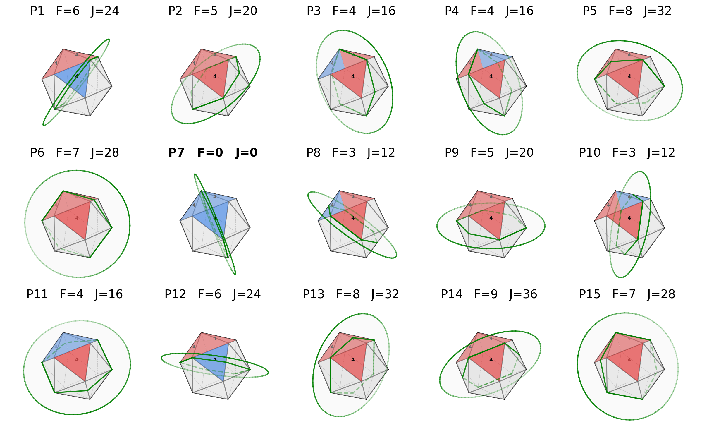
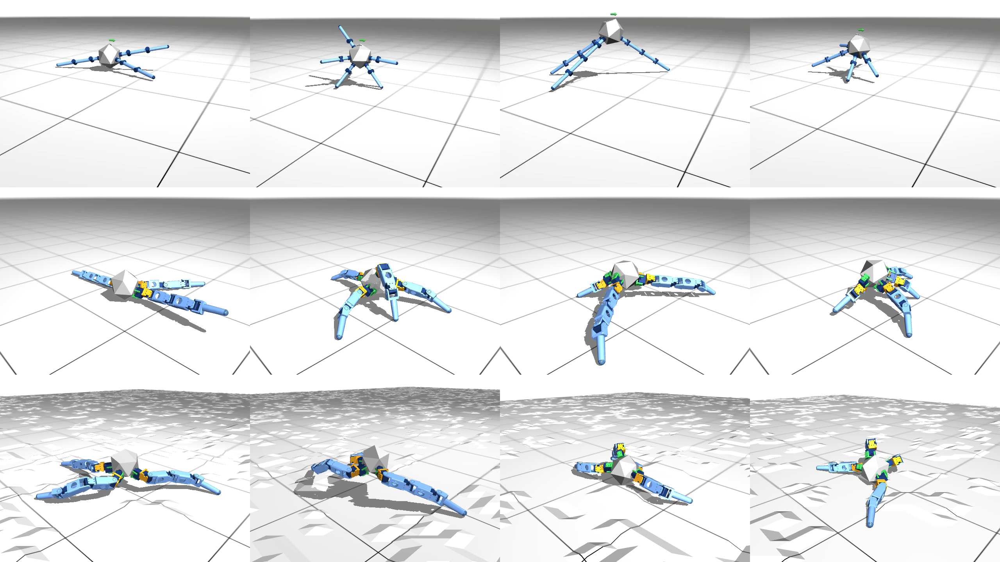
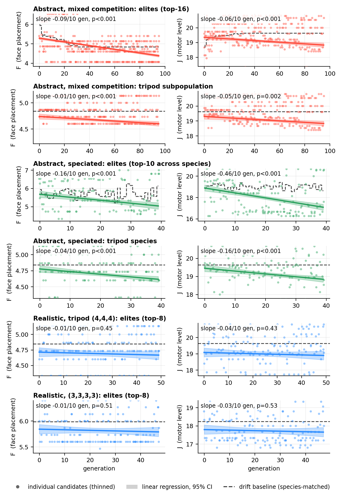
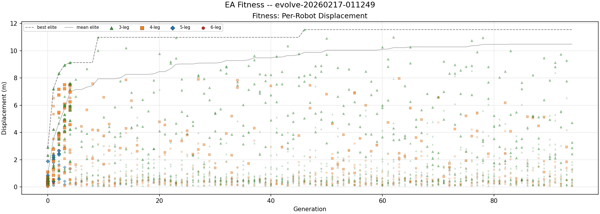
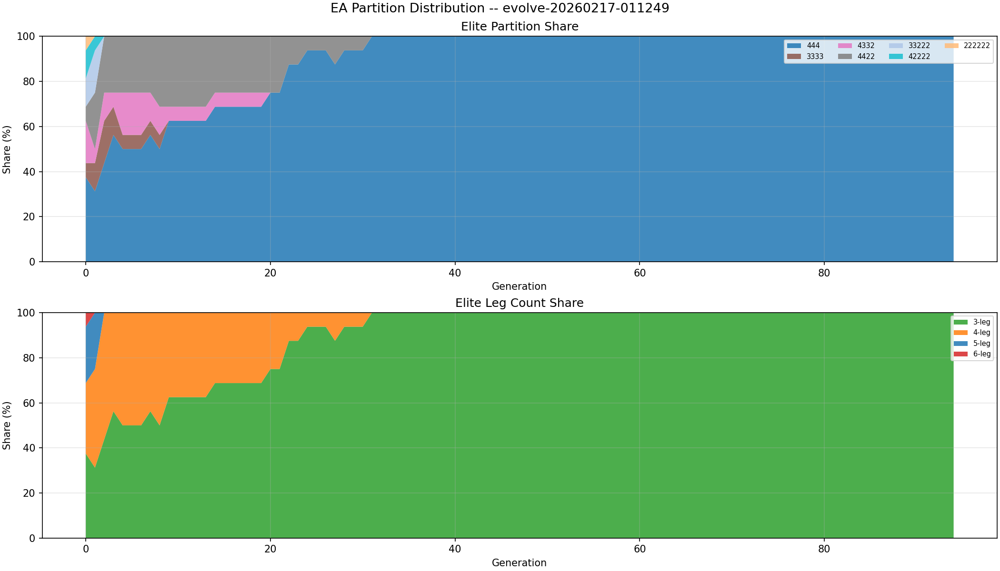

1 Creative Machines Lab, Columbia University
Training-time trajectories of all 18 morphologies in the abstract simulator, replayed through MuJoCo forward kinematics · 20 s clips · bodies drawn as the proxies that simulator computes with (capsule links, lumped joint masses) · fabricable-space clips will follow once the current hardware build is trained
Each body as the abstract simulator sees it · 20 s displacement and rank of 18, abstract → fabricable · ordered by abstract rank · click a card to load it in the viewer
Figures of the abstract; plotting scripts in vis/.




